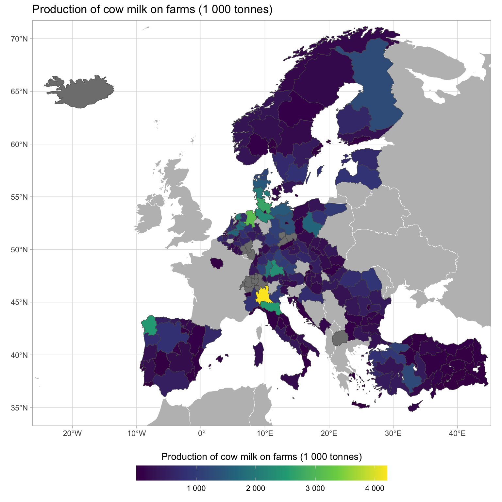
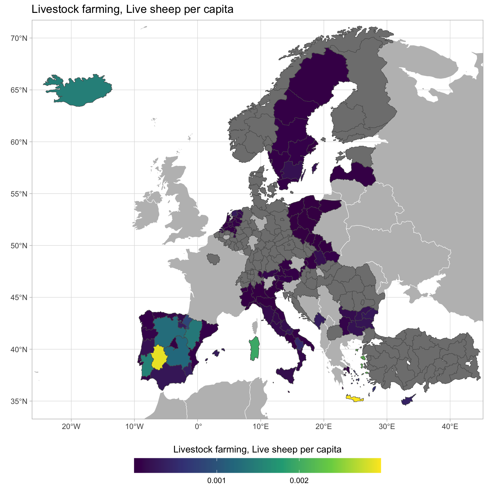
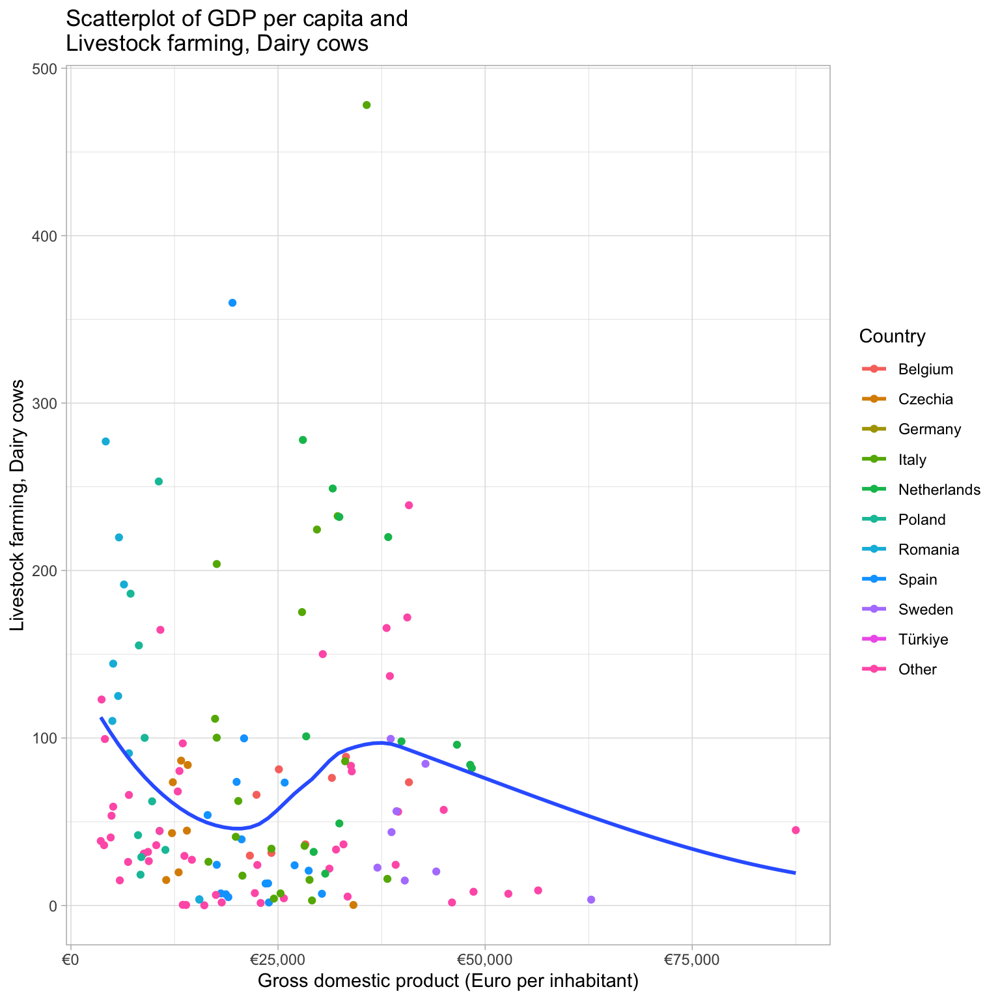
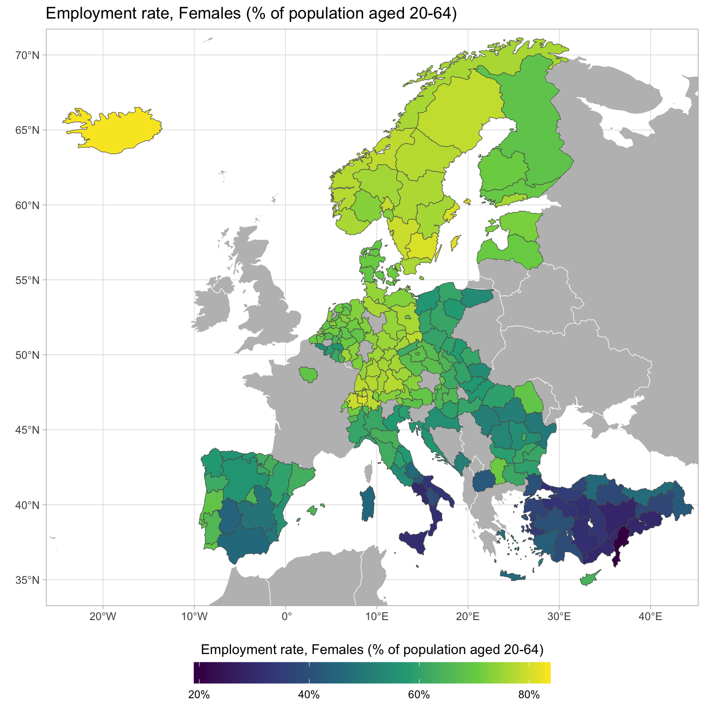
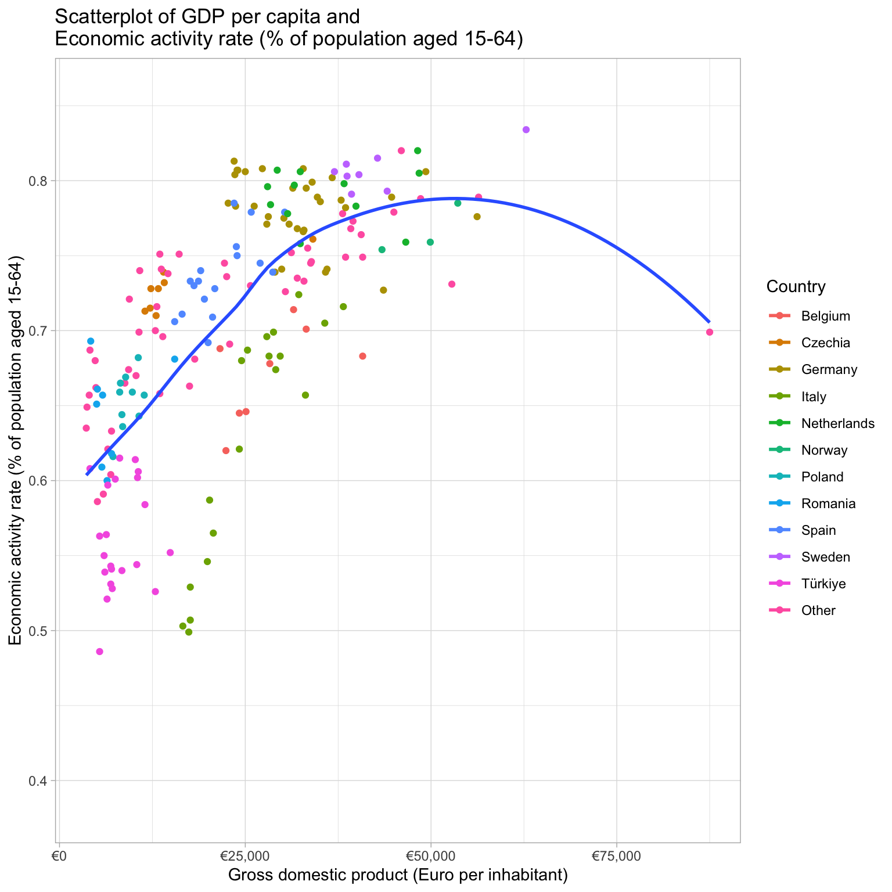
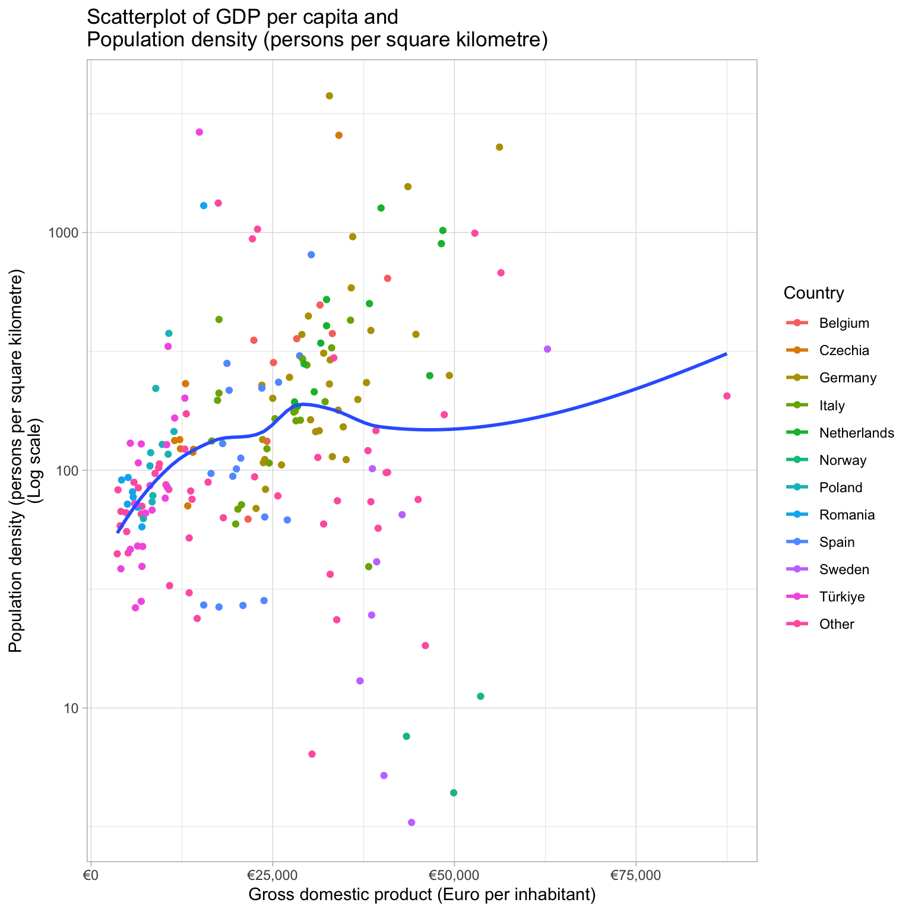
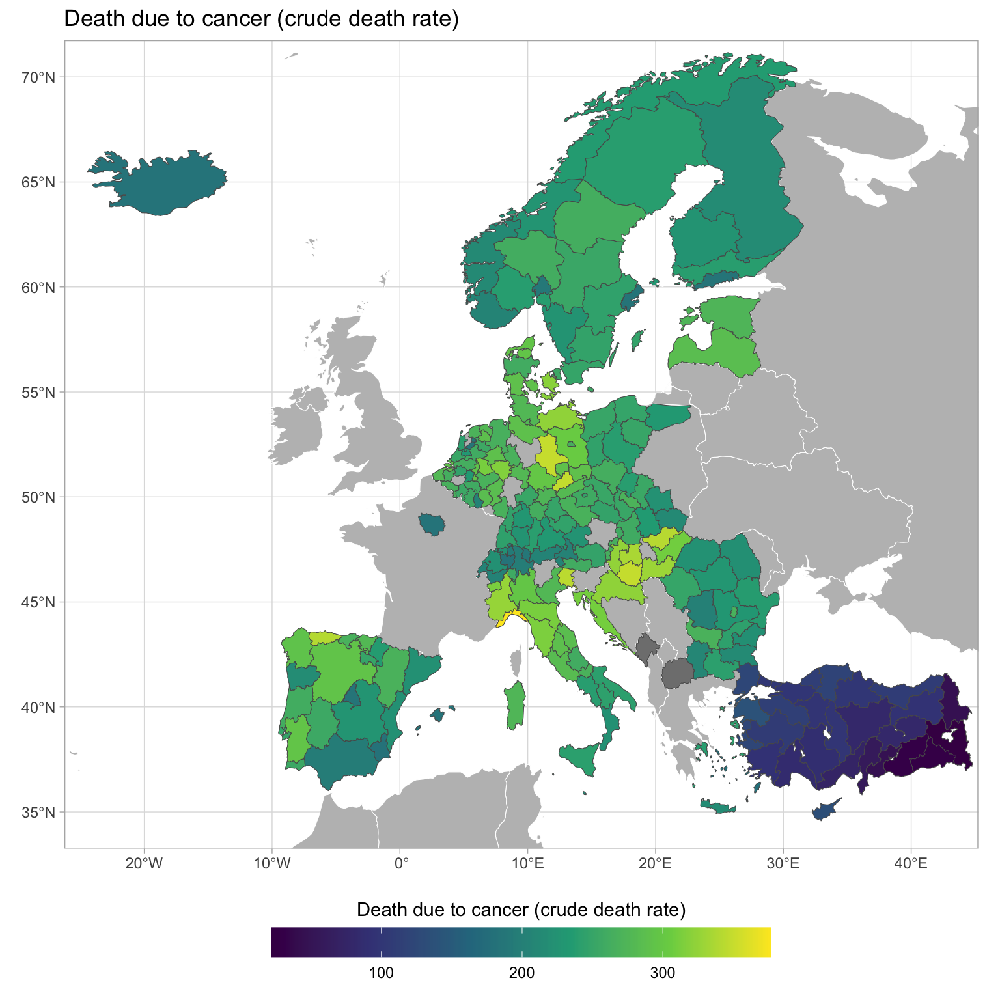
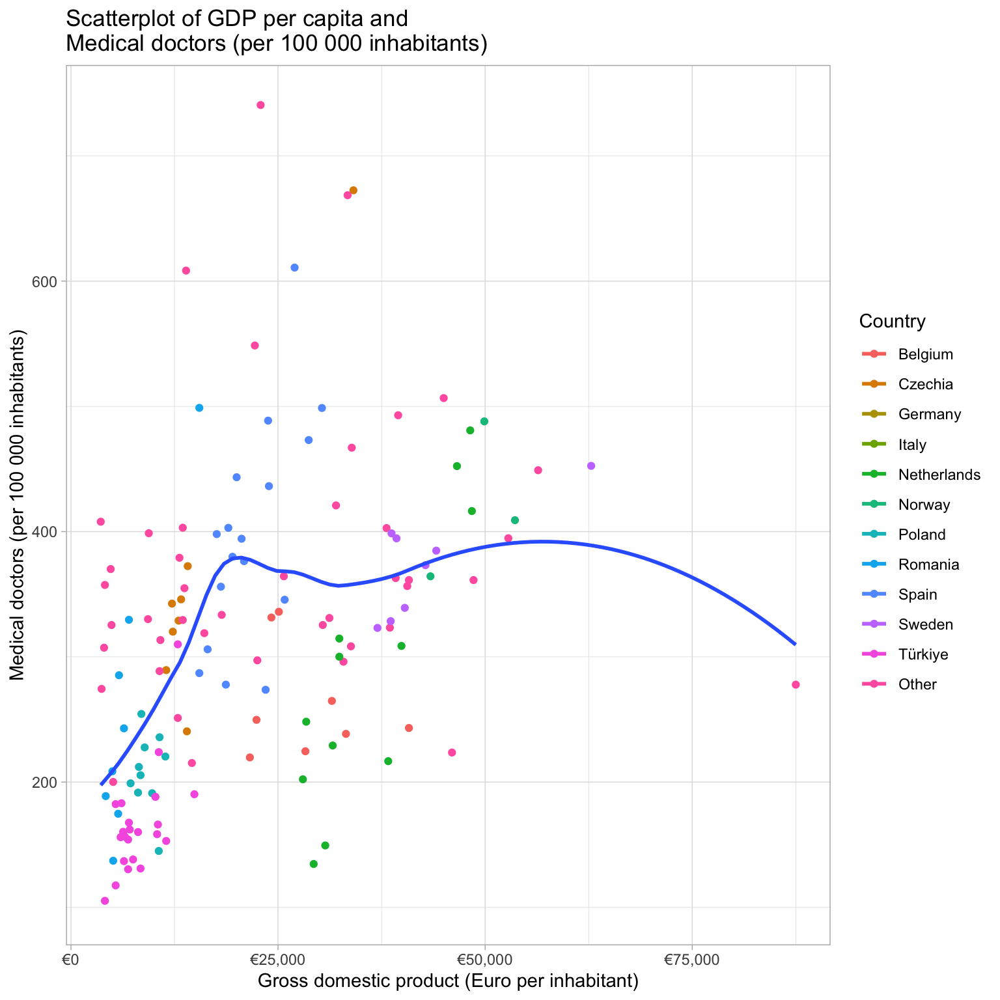
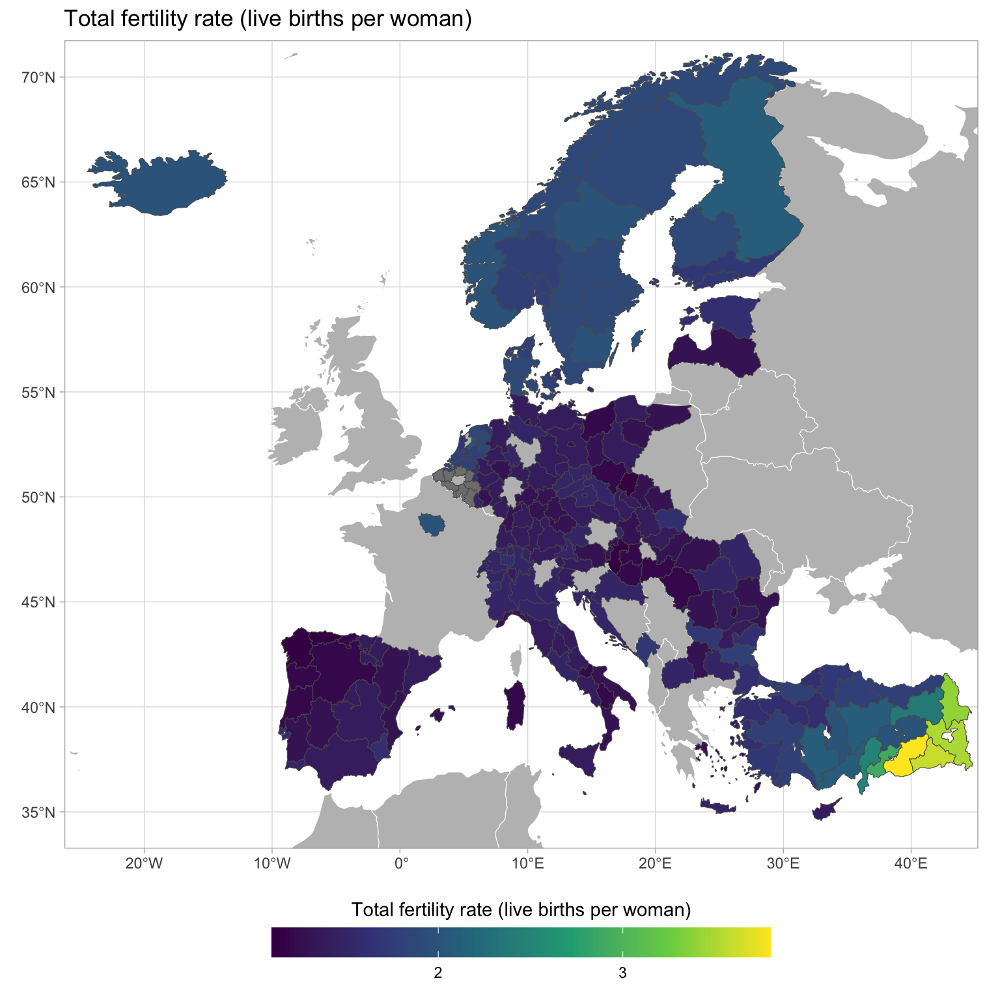
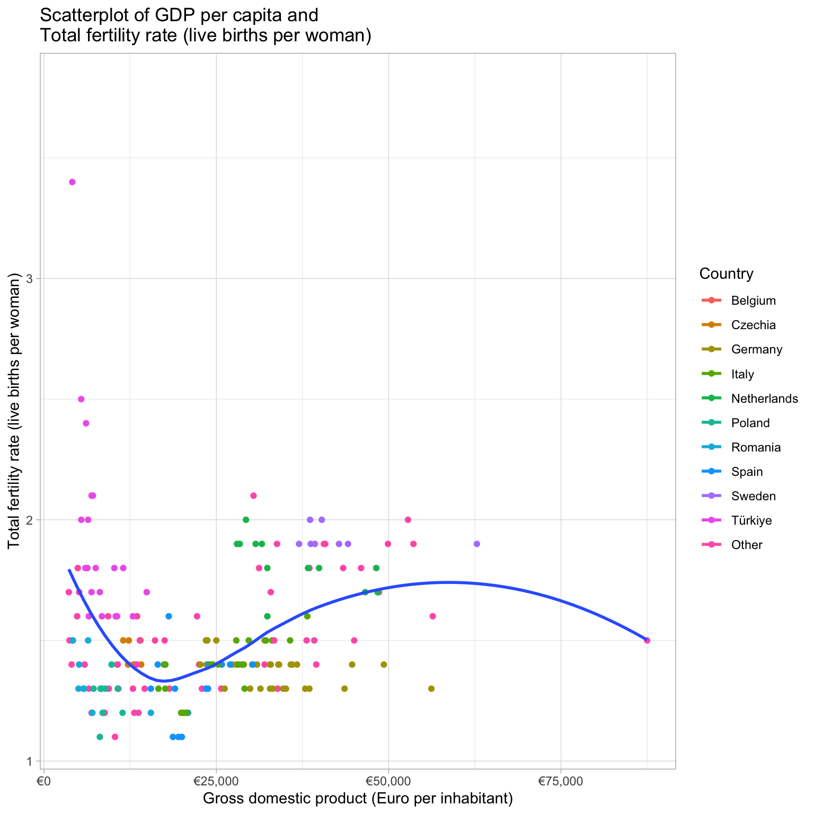

| List of indicators |
| Agriculture |
|---|
| Employment rate (% of population aged 20-64) |
| Gross domestic product (PPS per inhabitant in % of the EU-27 average) |
| Gross domestic product (PPS per inhabitant) |
| Livestock farming, Dairy cows |
| Livestock farming, Live goats |
| Livestock farming, Live sheep |
| Livestock farming, Live swine, domestic species |
| Livestock farming, bovine animals (1 000 heads of livestock) |
| Population (persons) |
| Population density (persons per square kilometre) |
| Production of cow milk on farms (1 000 tonnes) |
| Unemployment rate (% of labour force aged 15-74) |
| Economy |
| Employment rate, Females (% of population aged 20-64) |
| Employment rate, Males (% of population aged 20-64) |
| Employment rate, Total (% of population aged 20-64) |
| Gross domestic product (Euro per inhabitant in % of the EU-27 average) |
| Gross domestic product (Euro per inhabitant) |
| Gross domestic product (PPS per inhabitant in % of the EU-27 average) |
| Gross domestic product (PPS per inhabitant) |
| Gross value added at basic prices (million EUR) |
| Income of private households, Balance of primary incomes/National income, net (PPS per inhabitant, based on final consumption) |
| Income of private households, Disposable income, net (PPS per inhabitant, based on final consumption) |
| Population (persons) |
| Population density (persons per square kilometre) |
| Real growth rate of regional gross value added, Index, 2015=100 (% change on previous year) |
| Real growth rate of regional gross value added, Percentage change on previous period (% change on previous year) |
| Unemployment rate (% of labour force aged 15-74) |
| Education |
| Adult participation in education and training (% of population aged 25-64) |
| Early leavers from education and training (% of population aged 18-24) |
| Employment rate (% of population aged 20-64) |
| Employment rate of recent graduates (% of population aged 20-34) |
| Gross domestic product (PPS per inhabitant in % of the EU-27 average) |
| Gross domestic product (PPS per inhabitant) |
| Participation in early childhood education (% of 4 year-olds) |
| Participation in education, Primary and lower secondary education (levels 1 and 2) (%) |
| Participation in education, Tertiary education (levels 5-8) (%) |
| Population (persons) |
| Population density (persons per square kilometre) |
| Students in upper secondary education, Upper secondary education - general (%) |
| Students in upper secondary education, Upper secondary education - vocational (%) |
| Tertiary educational attainment, Females (% of population aged 25-64) |
| Tertiary educational attainment, Females (% of population aged 30-34) |
| Tertiary educational attainment, Males (% of population aged 25-64) |
| Tertiary educational attainment, Males (% of population aged 30-34) |
| Tertiary educational attainment, Total (% of population aged 25-64) |
| Tertiary educational attainment, Total (% of population aged 30-34) |
| Unemployment rate (% of labour force aged 15-74) |
| Young people neither in employment nor in education and training (% of population aged 15-24) |
| Health |
| All causes of death (crude death rate) |
| Death due to cancer (crude death rate) |
| Death due to diseases of the circulatory system (crude death rate) |
| Death due to diseases of the respiratory system (crude death rate) |
| Employment rate (% of population aged 20-64) |
| Gross domestic product (PPS per inhabitant in % of the EU-27 average) |
| Gross domestic product (PPS per inhabitant) |
| Hospital beds (per 100 000 inhabitants) |
| Medical doctors (per 100 000 inhabitants) |
| Population (persons) |
| Population density (persons per square kilometre) |
| Unemployment rate (% of labour force aged 15-74) |
| Labour Market |
| Economic activity rate (% of population aged 15-64) |
| Employment rate, From 15 to 24 years |
| Employment rate, From 20 to 64 years |
| Employment rate, From 55 to 64 years |
| Gross domestic product (PPS per inhabitant in % of the EU-27 average) |
| Gross domestic product (PPS per inhabitant) |
| Long-term unemployment share, Females (% of labour force aged 15-74) |
| Long-term unemployment share, Males (% of labour force aged 15-74) |
| Long-term unemployment share, Total (% of labour force aged 15-74) |
| Population (persons) |
| Population density (persons per square kilometre) |
| Unemployment rate, Females (% of labour force aged 15-74) |
| Unemployment rate, Males (% of labour force aged 15-74) |
| Unemployment rate, Total (% of labour force aged 15-74) |
| Young people neither in employment nor in education and training (% of population aged 15-24) |
| Youth unemployment rate, Females (% of labour force aged 15-24) |
| Youth unemployment rate, Males (% of labour force aged 15-24) |
| Youth unemployment rate, Total (% of labour force aged 15-24) |
| Population |
| Employment rate (% of population aged 20-64) |
| Gross domestic product (PPS per inhabitant in % of the EU-27 average) |
| Gross domestic product (PPS per inhabitant) |
| Infant mortality rate (deaths per 1 000 live births) |
| Life expectancy at birth, Females (years) |
| Life expectancy at birth, Males (years) |
| Life expectancy at birth, Total (years) |
| Population change, Crude rate of natural change of population (per 1 000 persons) |
| Population change, Crude rate of net migration plus statistical adjustment (per 1 000 persons) |
| Population change, Crude rate of total population change (per 1 000 persons) |
| Population density (persons per square kilometre) |
| Population, 65 years or over (persons) |
| Population, From 15 to 64 years (persons) |
| Population, Less than 15 years (persons) |
| Population, Total (persons) |
| Total fertility rate (live births per woman) |
| Unemployment rate (% of labour force aged 15-74) |
| Science And Technology |
| Employment in high - tech sectors (% of total employment) |
| Employment rate (% of population aged 20-64) |
| Gross domestic product (PPS per inhabitant in % of the EU-27 average) |
| Gross domestic product (PPS per inhabitant) |
| Human resources in science and technology (% of labour force) |
| Intramural R & D expenditure (% of gross domestic product) |
| Population (persons) |
| Population density (persons per square kilometre) |
| Researchers in all sectors (% of total employment) |
| Unemployment rate (% of labour force aged 15-74) |
| Tourism |
| Bedroom occupancy rate in hotels and similar establishments |
| Nights spent in tourist accommodation (per 1 000 inhabitants) |
| Nights spent in tourist accommodation (per square kilometre) |
| Population density (persons per square kilometre) |
| Transport |
| Air transport of freight (1 000 tonnes, loaded and unloaded) |
| Air transport of passengers (1 000 passengers, arrivals and depatures) |
| Employment rate (% of population aged 20-64) |
| Fatal road accidents (per million inhabitants) |
| Gross domestic product (PPS per inhabitant in % of the EU-27 average) |
| Gross domestic product (PPS per inhabitant) |
| Maritime transport of freight (1 000 tonnes, loaded and unloaded) |
| Maritime transport of passengers (1 000 passengers, embarked and disembarked) |
| Motorisation rate (passenger cars per 1 000 inhabitants) |
| Networks, Motorways (km per 1 000 square km) |
| Networks, Total railway lines (km per 1 000 square km) |
| Population (persons) |
| Population density (persons per square kilometre) |
| Unemployment rate (% of labour force aged 15-74) |
Additional Maps: Eurostat
In addition to the database that we have used so far, we can introduce more data from Eurostat.
You can have a look at their nice interactive web-based tool here or in the iframe below.
Using this data in Stata
To use this data in Stata, you must download the dofile, datafile and coordinates file here:
Series
Plots
Code
plot_levels <- function(indicator_in, period_in) {
df_map %>%
filter(
indicator == indicator_in,
period == period_in
) %>%
ggplot(aes(fill = value, geometry = geometry)) +
geom_sf(data = world, aes(geometry = geometry), fill = "grey", colour = "white") +
geom_sf() +
coord_sf(xlim = c(-23, 42), ylim = c(35, 70), crs = st_crs(4326)) +
scale_fill_viridis_c(labels = scales::number_format()) +
labs(fill = indicator_in) +
theme(legend.position = "bottom") +
guides(fill = guide_colourbar(title.position = "top", title.hjust = 0.5, barwidth = 20)) +
labs(title = indicator_in)
}
plot_pc <- function(indicator_in, period_in) {
stat_domain_in <- df_map %>%
filter(
indicator == indicator_in,
period == period_in
) %>%
distinct(stat_domain) %>%
pull()
df_map %>%
filter(
indicator %in% c(indicator_in, "Population (persons)"),
period == period_in,
stat_domain == stat_domain_in
) %>%
distinct(region, indicator, value, .keep_all = T) %>%
group_by(region) %>%
mutate(value_pc = value[indicator == indicator_in] / value[indicator == "Population (persons)"]) %>%
ggplot(aes(fill = value_pc, geometry = geometry)) +
geom_sf(data = world, aes(geometry = geometry), fill = "grey", colour = "white") +
geom_sf() +
coord_sf(xlim = c(-23, 42), ylim = c(35, 70), crs = st_crs(4326)) +
scale_fill_viridis_c(labels = scales::number_format()) +
labs(
fill = str_c(indicator_in, " per capita"),
title = str_c(indicator_in, " per capita")
) +
theme(legend.position = "bottom") +
guides(fill = guide_colourbar(title.position = "top", title.hjust = 0.5, barwidth = 20))
}
plot_scatter <- function(indicator_in, period_in) {
df_map %>%
filter(
indicator %in% c(indicator_in, "Gross domestic product (Euro per inhabitant)"),
period == period_in
) %>%
distinct(region, indicator, .keep_all = T) %>%
select(-c(stat_domain, year)) %>%
pivot_wider(names_from = indicator, values_from = value) %>%
mutate(country = fct_lump(country, 10)) %>%
ggplot(aes(
x = `Gross domestic product (Euro per inhabitant)`,
y = .data[[indicator_in]],
colour = country
)) +
geom_point() +
geom_smooth(aes(group = 1), se = F) +
scale_x_continuous(labels = scales::dollar_format(prefix = "€")) +
labs(
colour = "Country",
title = str_c("Scatterplot of GDP per capita and\n", indicator_in)
)
}What can we say about milk production? Look at Switzerland go!

How about sheep farming? Sheesh have a look at Crete!

There isn’t a super clear relationship between number of cows and GDP per capita. Good news that you can farm in a rich country still!

Why does Turkey have such a low level of employment among women?

It seems that there is a strong relationship between GDP per capita and the economic activity rate. Can you guess about the direction of causality?

Do we see agglomeration effects with higher GDP per capita in areas with higher population density? Note the logged y axis.

Look at how well Scandinavia compares to Western Europe in rates of university education among women!
(I don’t know why France is mising…)
Who leaves school early? Maybe people in places where formal education is not that enticing?

Look at how the countries separate here - wow!
See how few hospital beds Sweden has compared to Norway.
Seems like you have to be a rich country in order to live long enough to die from cancer :(

Look at how the countries separate here - wow!


Interesting demographic trends! You have to be rich enough to have children in a rich country!
